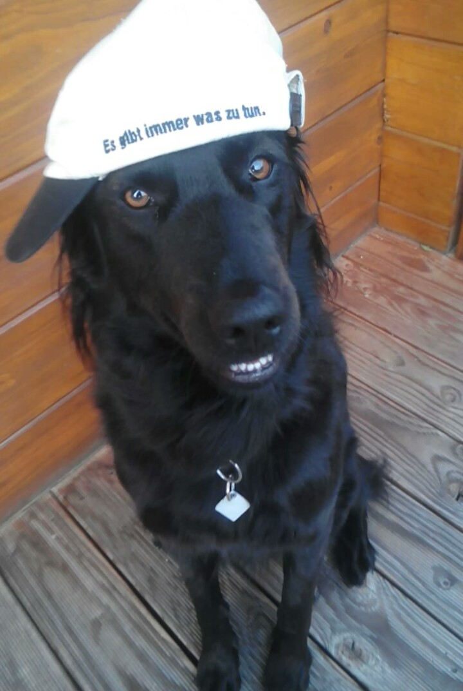

Ich bin Lara Herfurth, bin 20 Jahre alt und komme aus Nagold.
Meine Hobbys sind zeichnen, fotografieren, inlinern und ab und zu
auch mal zocken.
Das wars dann aber auch schon...
Ich studiere OnlineMedien im 2. Semester an der HFU.
Schaut auch mal bei Vinni, Sandra und Sarah vorbei.
hier gehts wieder nach oben
